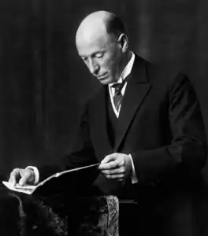

Абд-ру-шин (або Абдрушин) — псевдонім Оскара Ернста Бернхардта — автор твору "У Світлі Істини — Послання Ґраля".
Народився 18 квітня 1875 року у Бішофсверді (біля Дрездена). Ім'я Абд-ру-шин, під яким він писав своє Послання Ґраля, за змістом означає "Слуга Світла".
У 1928 р. Оскар Ернст Бернхардт переселився в Австрію, де жив доти, доки націонал-соціалісти не експропріювали його володіння та не заборонили твір "У Світлі Істини". Його діяльності перешкоджали, і 6 грудня 1941 року Абд-ру-шин помер у Кіпсдорфі (саксонські Рудні гори), де змушений був провести свої останні роки життя під наглядом гестапо. Дитинство, проведене Оскаром Ернстом Бернхардтом у Бішофсверді, було щасливим. Після шкільних років почалася комерційна освіта та навчання, яке він закінчив у Дрездені. Як самостійний підприємець, а пізніше співвласник великої фірми з експорту та імпорту, Оскар Ернст Бернхардт багато подорожував. Його переживання та враження незабаром спонукали його відмовитися від професії комерсанта на користь письменницької діяльності, і врешті-решт він працював уже лише як письменник. Поряд з дорожніми нотатками, новелами та романами значного успіху він досяг насамперед як автор сценічних творів. Після тривалого перебування у Нью-Йорку (1912-1913) він здійснив подорож з навчальною метою до Лондона. І там, після того як спалахнула Перша світова війна, сорокарічний Оскар Ернст Бернхардт з 1915 по 1919 роки знаходився в ув'язненні у британському таборі для інтернованих на острові Мен. Чотирирічне ув'язнення дало йому можливість співпережити внутрішні біди людей, які вже не знаходили виходу з хаосу розвалювання старого світового порядку. У нього пробудилося бажання допомогти в цьому знанням про вирішальні, всеосяжні взаємозв'язки. Таким чином, з 1923 р. Оскар Ернст Бернхардт почав публікувати доповіді за вже згаданими серйозними питаннями життя під ім'ям Абд-ру-шин. При цьому це ім'я виражає не тільки те, що він усвідомив як своє завдання та чим він жив – бути Слугою Світла, але й замикає дугу від його першого, підготовчого життя за часи Мойсея до подавця Послання Граля. Вчення про повторювані втілення є центральною складовою твору "У Світлі Істини". 1928 року Абд-ру-шин оселився на Фомперберзі у Тіролі, поблизу Інсбрука, та завершив там своє Послання Граля. Коли у 1938-ому Австрія стала "німецькою", нацистський режим заборонив подальше розповсюдження його твору. Абд-ру-шин був заарештований, а його володіння на Фомперберзі експропрійоване. Після шести місяців тяжкого перебування під арештом в Інсбруці йому довелося покинути окуповану Австрію. Врешті-решт він знайшов притулок у Кіпсдорфі, в саксонських Рудних горах. При цьому йому було заборонено відкрито займатися своєю діяльністю та приймати відвідувачів. Гестапо постійно стежило за Абд-ру-шином та контролювало його. Роки заслання він використав для переробки Послання Граля в ту "Останню авторську редакцію", яку він визначив як видання, передбачене для розповсюдження. Але заслання та ізоляція мали свої наслідки: Абд-ру-шин помер 6 грудня 1941 року в Кіпсдорфі у віці всього лише 66 років.